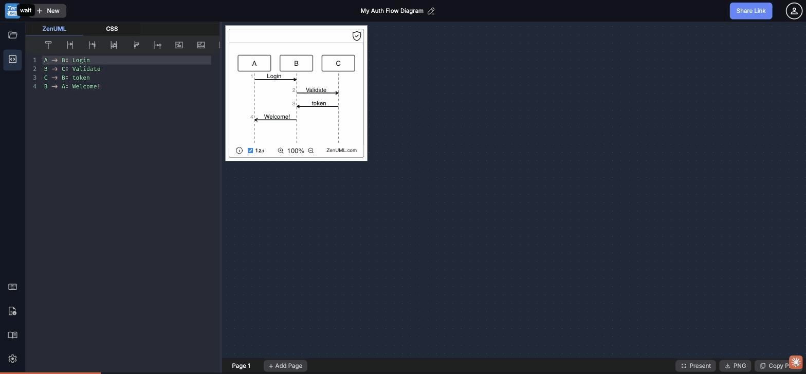

At 390px (iPhone 14), the entire bottom toolbar disappears, the diagram shrinks to a 55px sliver, and the header title wraps to 3 lines
Simulated iPhone 14 width (390px CSS) — desktop layout forced into mobile width reveals critical breakage.

| Component | Desktop | Mobile (390px) | Impact |
|---|---|---|---|
| Header title | Single line, centered | Wraps to 3 lines ("My Auth / Flow / Diagram") | ~45px height lost to title wrapping |
| Diagram canvas | ~800px wide, full diagram visible | ~55px sliver — only leftmost participant visible | Diagram completely unusable |
| Insert toolbar | 8+ icons visible | 4 icons visible, rest clipped | 50%+ of tools inaccessible |
| Bottom action bar | Present / PNG / Copy PNG visible | All 3 export buttons cut off | Export completely unreachable |
| Page tabs | "Page 1 / + Add Page" visible | "Page 1" visible, "+ Add Page" cut off | Can't add pages on mobile |
| Left sidebar icons | 6 icons, accessible | Still visible but take 50px from already-narrow space | Worsens all other clipping |
| Code editor | ~380px wide, usable | ~200px wide, cramped but functional | Typing possible but uncomfortable |
The entire application renders as a desktop layout with no breakpoint adaptations for mobile screen widths. The split-pane editor+canvas design assumes a wide viewport and fails catastrophically on narrow screens:
max-width: 600px/768px: body { font-size: 70% }, .main-header { overflow-x: auto }, and .hide-on-mobile { display: none }width=device-width, initial-scale=1 viewport meta tag signals mobile intent — the CSS doesn't follow throughAt 390px width, the layout allocates: ~50px sidebar + ~200px editor pane + ~55px canvas sliver + ~85px overflow. The canvas is visible as a 55px strip showing only the leftmost edge of the first participant box:
50px sidebar + 240px editor + 55px canvas sliver = 345px used (45px overflow)The bottom action bar contains "Present | ↓ PNG | ⎘ Copy PNG" buttons on the right side of the screen. At 390px, these buttons overflow beyond the viewport and are completely inaccessible:
The header title element contains "My Auth Flow Diagram" (from the previous session). At 390px, this wraps into three lines: "My Auth / Flow / Diagram". The header height inflates significantly:
text-overflow: ellipsis or max-width constraint on the title elementThe insert toolbar above the editor shows 8+ icon buttons (New participant, Async, Sync, Return value, Self message, New instance, Conditional, Loop, and more). At 390px, only the first 4 fit:
overflow-x: auto — clipped content is simply invisibleEven at desktop sizes, the diagram canvas lacks scroll-to-zoom and drag-to-pan (documented in Case 09). On mobile these gaps are worse because touch users have no mouse wheel alternative: